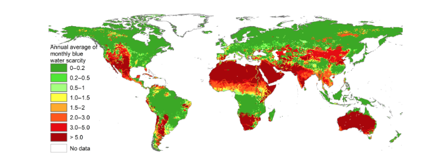

Water Footprint Lab
Mapping freshwater use across the planet — and what it means for water security, ecosystems, and people.
Global Water Scarcity
Roughly four billion people live under conditions of severe water scarcity for at least one month of the year — a pattern shaped by both climate and the intensity of local water use.

From the Lab
Principal Investigator
Loading…
Ph.D. Researchers
Loading…
About the Lab
The Water Footprint Lab is part of the Department of Civil, Construction and Environmental Engineering at The University of Alabama, led by Dr. Mesfin Mekonnen. Our research focuses on the relationship between human activity and freshwater resources — mapping water footprints, assessing scarcity, and exploring pathways to sustainable water use at local, regional, and global scales.
Dr. Mekonnen is a Clarivate Highly Cited Researcher and has published more than 70 peer-reviewed papers in journals including Science, Nature, and PNAS.